SARAH HUANG
I love coding what I can visually see! From designing small games in high school to updating websites for work and clubs, I enjoy beautifying applications to create human-centered experiences.
I love coding what I can visually see! From designing small games in high school to updating websites for work and clubs, I enjoy beautifying applications to create human-centered experiences.
All notable class and personal projects have their own mention!
To see all projects on GitHub, please select the last image.
Use the IMU (along with other sensors if desired) to create a physical-based interaction that is digitized, analyzed, and then used to control/actuate (provide haptics or move things) in the real world.
The IMU has a gyroscope to measure rotation and accelerometer to detect motion. With those concepts, we came up with 20 ideas and various sketches. We ultimately dwindled it down to 3 interaction concepts and created low-fidelity prototypes.
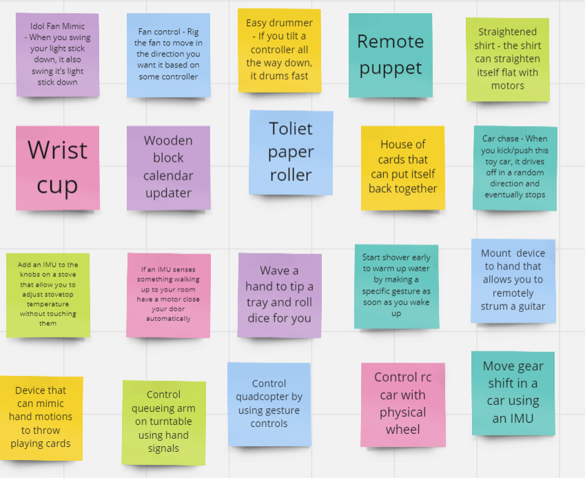 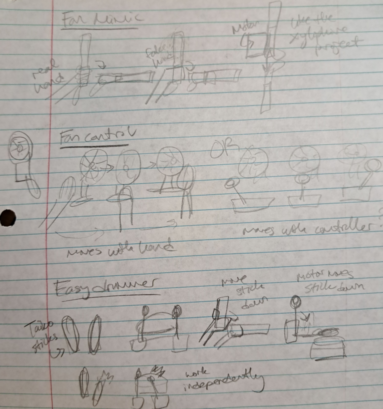 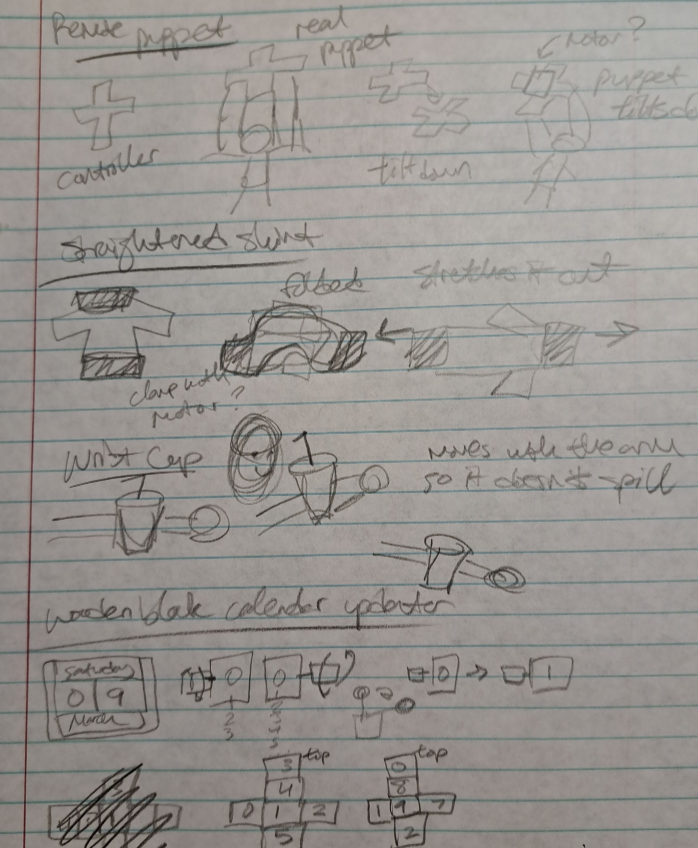 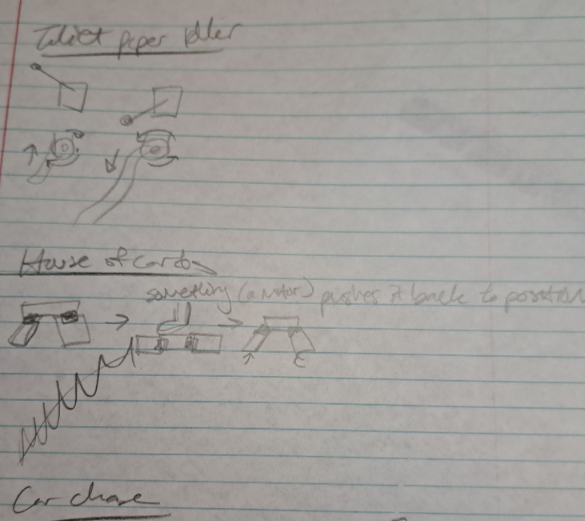To take advantage of IMU's gyroscope, we could attach the electronics to a human wrist. We thought of attaching a cup or small flashlight to the electronics glove. For the cup, the gyroscope and motors could self-adjust the cup so that it is always standing tall and will not spill over. It will move with the user's wrist. As for the flashlight, maybe it could adjust up, down, left, or right depending on small movements from the wrist.
 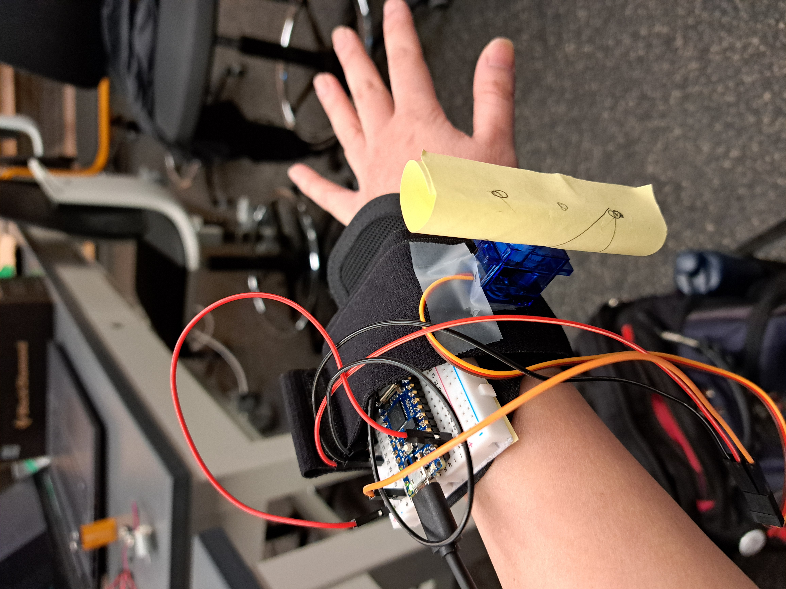
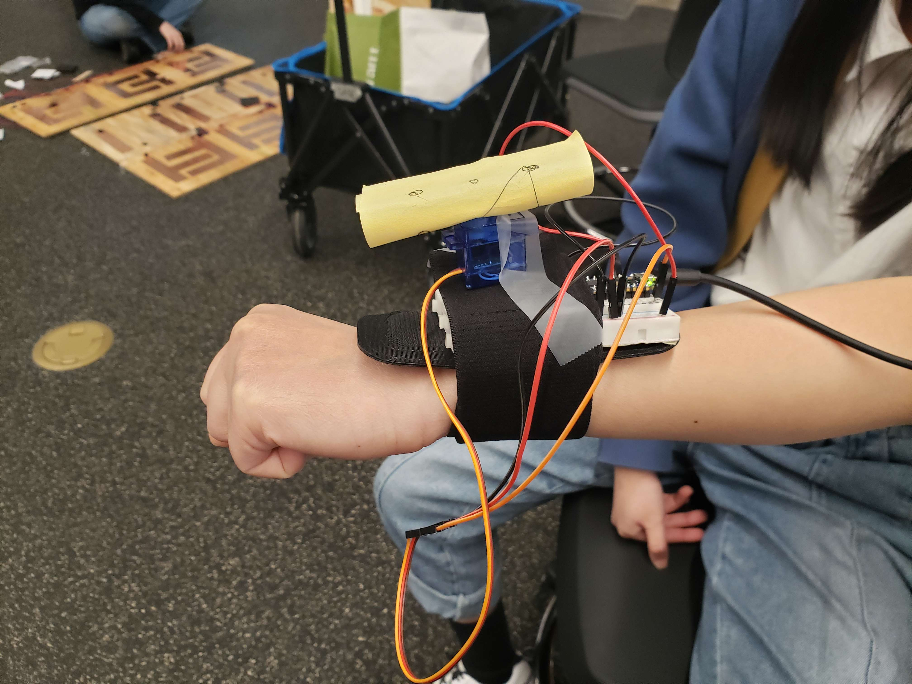
RC Wheel
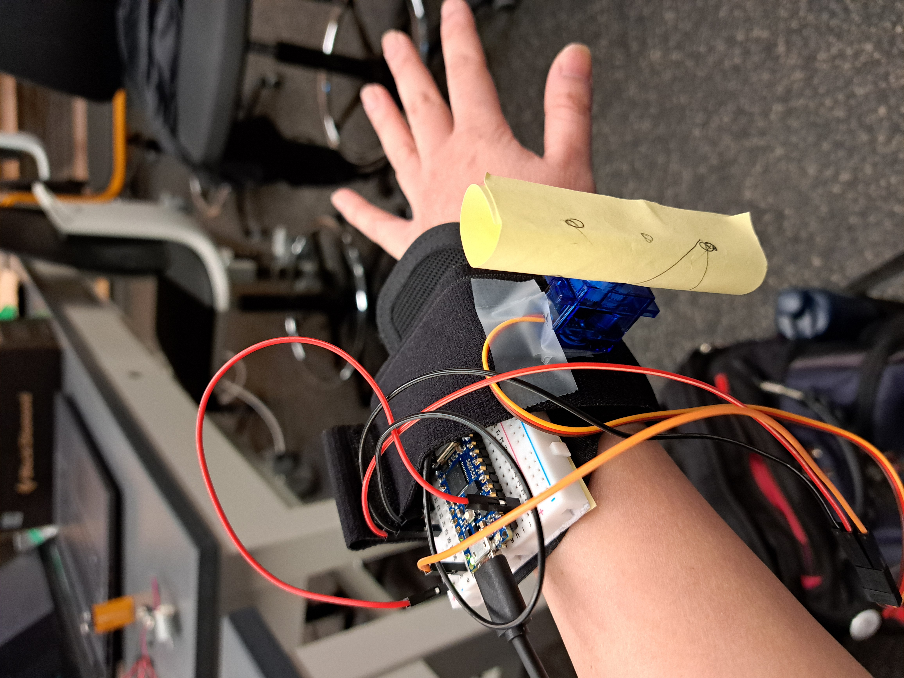
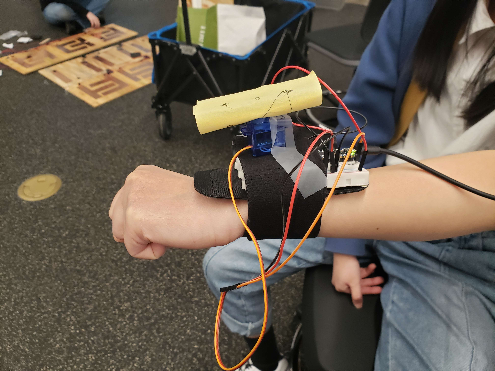
RC Wheel
Using a Nintendo Ring Fit Adventure wheel controller, we could attach the circuitry to the wheel and read steering information. RC cars typically have a controller with a joystick, but we could repurpose a RC car to be steered with a makeshift steering wheel.
The car chase idea was inspired by the car toys that you wind up by rolling it backwards and then releasing it so that it moves a distance without requiring any batteries. Small children and cats could have fun with this type of toy. The purpose of this video is to demonstrate the functionality of "hitting" the Arduino in order to drive a motor. When the IMU detects an impulse in a specific direction above a certain threshold, it revs the motor up before ramping it back down. The purpose of building this circuit was to test the feasibility of creating a car that drives off in a certain direction when it is hit by something.
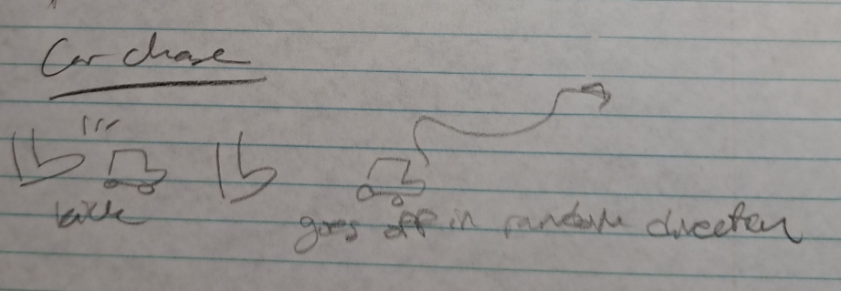 Materials
Materials
In the example projects we looked at, many of them utilizied the gyroscope and not the accelerometer. Also, the idea of hitting the project to make it move is entertaining. My partner, Christian, already had a car chasis that could be repurposed for this project. We wanted a project that fulfilled the project objective, was simple to code, and did not require buying additional materials.
How Does It Work?A pull back car is a toy car that uses springs to store energy when pulled back. When the car is released, the energy stored in the spring moves it forward. Instead of springs, we utilize the Arduino's IMU and accelerometer sensor to detect any movements the Arduino makes. For example, our car will move forward if you push or kick the back of the car because the impact of the Arduino can be coded to make DC motors spin the wheels.
Safety CasingWe already had a simple car chassis with enough surface area to place our breadboard. However, having the electronics exposed is could be a safety and operation concern when users could easily kick with enough force to disconnect wires and the battery. Therefore, we repurposed a 3D printed container to house the electronics in.
Video DemoIn this assignment, the goal is to rethink the materiality of computing and interaction. You must make a primary input device (e.g., paper joystick) or a primary output device (e.g., ambient display) using low-tech materials such as paper, conductive paint, play-dough, tape, water, food, etc. The primary interactivity must be mediated by the low- tech material (i.e., the low-tech material cannot be superfluous to your design, it must be directly integrated).
We thought of many different low-tech materials we could make our input device out of: air, water, food, sound, conductive surfaces (cardboard, tape). We ultimately narrowed it down to the "Food - My expired Cheerios become a keyboard" and "paper guitar" as a back-up. The Cheerio idea came about because my Cheerios were expired and idly sitting in my pantry. Their roundness reminded me of key caps on a keyboard. My partner, Christian, thought of creating a paper guitar in honor of Paper Jamz from his childhood. Plus, using a graphite pencil and paper to create a paper piano already exists so a guitar could also work.
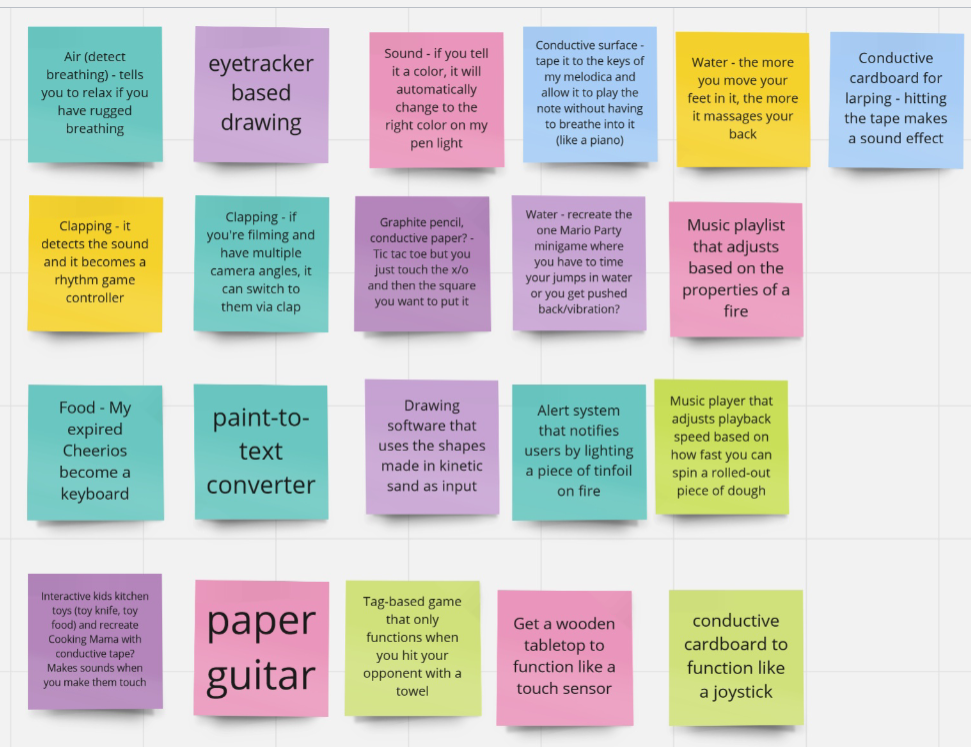As the originator of the Cheerio keyboard idea, the prototype below was what I first thought of. It started as a half-baked idea that would be funny to press Cheerios instead of keys but ultimately wasn't very creative. Replacing the Cheerios with another food item would lead to the same product. We wanted to capitalize on the properties of a Cheerio, so treating it like a standard keyboard was not our solution.
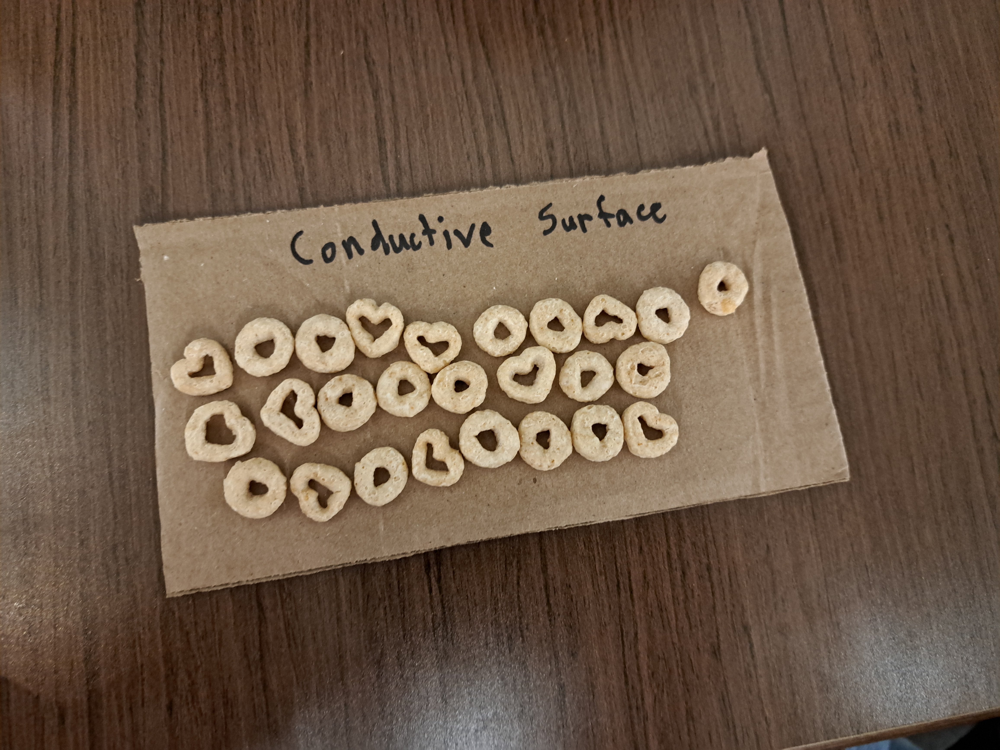 Cheerio Keyboard GridYou can spell out letters with Cheerios! Inspired by the Professor Layton games in which the player must write out each letter in a grid with their stylus, the user would have to start on the far left side of the grid and spell out the letter with Cheerios. It would be able to detect capital and lowercase letters as well as symbols like μ (mu) as long as it fit in the grid. Specific letter and symbol patterns would need to be implemented as we do not have the time to train a model to detect the various combinations you can arrange Cheerios to make a "b". The problem is figuring out how to make a pressure plate system given the time frame and without paying out of pocket.


 Cheerio Thread
Cheerio Thread
Noticing we have conductive thread, we could use the Cheerios to block the thread from touching certain input areas. In this prototype, the black squares are conductive surfaces. We can move the Cheerios to block certain squares, and the remaining ones could equal a certain input. If we still wanted to output characters, I can see the user moving the Cheerios back and forth. This prototype was insightful because it used resources we already had and gave us something conductive to work with since Cheerios are insulators.
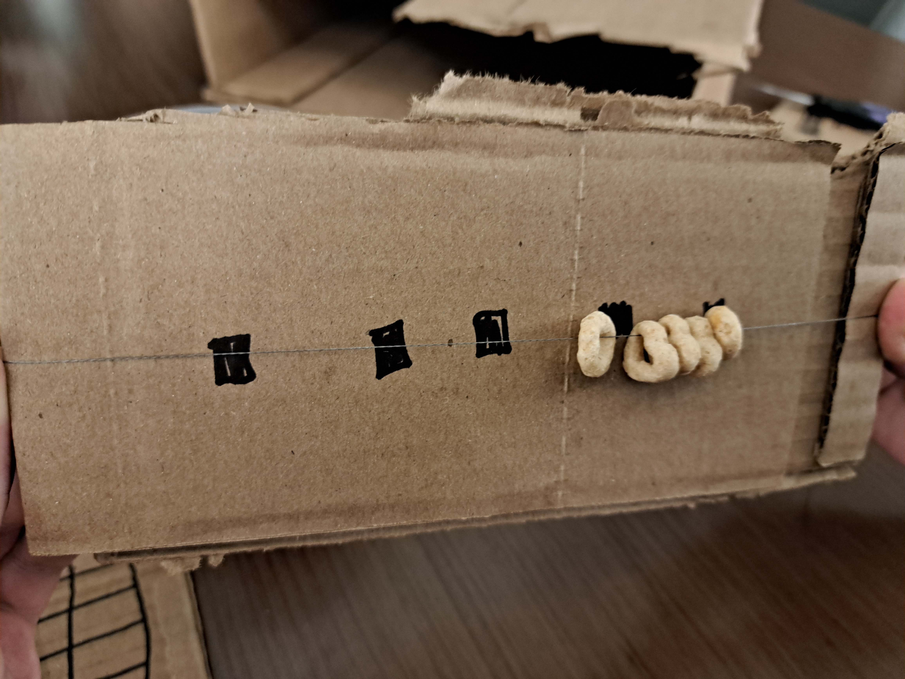 Cheerio ShakerSince we have a microphone, we could utilize the sound of Cheerios. In our prototype, we store some Cheerios inside this little bag and shake it like a maraca. One Cheerio will sound different than multiple Cheerios, and that could mean different input. Honestly, this prototype might not lead us anywhere because we have to brainstorm all the different ways to differentiate sound since it cannot tell exactly how many Cheerios are used in a bag.

 Cheerio Temperature
Cheerio Temperature
Our last quick prototype uses the temperature sensor. We considered creating a game where two players flick Cheerios into goals. One player would use dry Cheerios and the other wet Cheerios. The temperature sensor would help determine who scored a point based on how wet/cold the Cheerio is. The Cheerio slides right through the sensor due to its hole, so maybe a player wins or scores a point when they've flicked enough Cheerios for the top one to be touching the sensor.

We decided to go with the conductive thread idea because we already had the materials. Time played a big factor in our decision. Following our prototype, we tested the idea with four conductive tape inputs and cardboard as our surface.

The Cheerio proved to be a good blocker of the conductive tape! We had to adjust the tape positions, so the thread would touch the other tapes but not the one blocked by the Cheerio.
We noticed that craftmanship was a factor on the rubric, so we upgraded our cardboard surface to wood. We found a piece long enough to have two rows of 5 copper tape inputs, so we can express the numerical values 0-8 given the available pins on our Arduino. Another issue that arose with the new wooden surface was the thread not laying completely flat even when it was taut. To address this, we used black foam to elevate the conductive tape, so the thread would guaranteed touch the conductive surfaces.

Due to time constraints, we didn't fully investigate the conductive properties of the conductive thread. We originally had one long string for all 8 sensors, but the slightest change to one sensor would affect all of the readings. Instead of using one digital pin for the capacitive sensor, we decide to allocate a pin to each sensor, so they read independently. Additionally, we decided to then a string and Cheerio per two sensors. This didn't help the sensitivity issues and complicated our code since we needed to find the difference in threshold between the baseline and current reading.


In the end, we had to have a string for each sensor, so the sensor could clearly tell if a Cheerio was on it (low reading) and when it was off (high reading) without having any other sensors interferring its reading. We also learned that the best Cheerios to use were the circular ones because they were thicker than the heart-shaped ones and could elevate the string high enough to where it wouldn't make contact with the copper tape. We included directions and illustrations as well to elevate the product's appearance. If we had more time and could figure out the Arduino Nano IoT 33 hardware, we would've liked it to act as a keyboard number pad and act as input rather than just outputing to the Serial monitor.
Here's how it works:
We successfully demonstrated iterative prototyping. We started with many ideas and narrowed it down to one. We started with many implementations of that one idea and narrowed it down to one. When the implementation wasn't perfect, we continued to improve until it was functional. From our documentation, it's fascinating to see how we started with a Cheerio keyboard that would look like a normal keyboard to Cheerios on threads. It's sad to deviate from the original lofty idea, but we came out with something new and courageous.
The goal is to build an interactive game with the LED 8x8 matrix. Not only does the game need to be fun, but it should also use an inventive input device. For our game, we decided to recreate Stacker, an arcade game that challenges the player to build a tower with blocks row by row without missing. Instead of a button, the inventive inputs will be a slider that places the block and a photoresistor that dictates the speed of the block.
The objective of Stacker is to line up the rows of blocks to make a tower and reach the top of the screen. Rows can include one to four blocks, depending on the progression of the tower. The row moves back and forth, so players must use timing and precision to place their rows. The row must be connected to the tower to advance to the next row. If the player places their row and the blocks do not touch the previous rows they laid down, they lose and must start over from the beginning. The player wins once they successfully place their last row, and the tower reaches the top of the screen.
We noticed the appearance of the LED 8x8 matrix and decided that it's not too graphically different from Stacker. We can still depict the tower, blocks, and white space by lighting up specific dots. Stacker is always played with a button to test a player's timing and precision. To be inventive, we decided to replace the button with a slider. Moving the slider to its left and right extremes will place the row, so the intended motion is for the player to move the knob back and forth horizontally. This action requires much more timing and physicality than a simple button click.
Rather than Stacker being a single-player game, we altered it to become a two-player game. The game is designed to increase the speed of the blocks the higher the tower becomes, which would result in us making a randomizer or arbitrarily increasing the speed by some factor. What if we allow a second player to influence the speed instead? Using a photoresistor and a light source, we made the brightness the determining factor of speed. The more light the photoresistor detects, the faster the blocks move. This interactive input allows quick speed changes to further challenge the player. We used the Daisenko Blade 200 Pen Light as a fun controller, but any light source will work.
After lots of testing, we figured out the pin layout of our LED 8x8 matrix:

If we had more time, we would make an enclosure for our system and try to separate the slider and the photoresistor from each other. The presence of the light source can be distracting to the player on top of the block speed change.
In the game loop, this is a summary of the actions taking place:
An overall hurdle was determining if our bug was a hardware or software issue. Faulty code can be easy to diagnose, but it was frustrating to have the code not work due to a loose wire or bent pin. One surprising example was a button. The original Stacker game is played with a button, so we assumed that implementing one would be a great way to test our game logic. However, we struggled with debouncing and reading the button inputs. Clicking the button once might read a lot more than one or clicking it multiple times would not register at all. A major source of the issue was a pin on the button being bent when we moved our circuitry to a bigger breadboard. In the end, we decided to just switch to the slide potentiometer and it worked just fine.
At the end of this process we are left with an old game that can be played in an entirely new format for a completely new experience. From a design perspective, adapting a game that is traditionally for one player and making it work for two is an interesting challenge that turned out to be a lot of fun to plan around. By giving each player a range of input it opens up the possibility space in how the game can be played for either side. Getting the technology to work synchronously proved to also be quite the challenge but one that has greatly improved our technical ability when working with microcontroller-based devices.

The best way to practice front-end development skills is making your own website! Plus, it's a great way to show your projects off visually instead of linking a Github repo. In order to get a portfolio site in time for a career fair, I did end up using a template. So shout out to "Astral by HTML5 UP" for the beautiful template because I decided to do this the night before the fair. I will be adding my own code to it for now on.
Back to that career fair, I needed to make a portfolio site quick. I wanted to create an easy theme because using the default design would make it clear it's a template. Then I thought of Louie Zong's "hello world" song on Youtube. Just like every other programmer, my first program was getting the console to print out "hello world." This website's theme is based on the video's aesthetic.
See the lil robot on the top right corner? That's my Computer Companion or CC for short. I thought having a friend on my website would be fine. Don't get too excited though. For now, it's just a clickable image that plays sound. It resembles Louie Zong's model in the song "hello world," but I CADed this model on Onshape from scratch with slight differences. As for the animation, I used this website to make an animated gif of it fidgeting to indicate to the user that you interacted with it. The songs it plays uses the same software Louie used. You can learn more about Virtual Singer through the link. In the future, I would love to incorporate speech bubbles and more interactivity to make it more alive than just a vibrating image.

My favorite college computer science course was Software Engineering in junior year. I always felt unmotivated to get the weekly/bi-weekly coding assignment done because we would just move on to the next one.
I wanted a project that I would work on from scratch and for longer duration. And that's what Software Engineering was: a semester-long team project.
This project team consisted of me, Harrison Hoytt, Edward Moran, Ryland Seagraves, and Kuba Zeligowski. The idea came from Kuba because he loves games and wanted to make a party game.
nulltime is essentially a digital version of Fishbowl or Time's Up.
Below is our powerpoint presentation that explains the software:
This project convinced me that I wanted to do front-end development. It was my first experience using Angular, and I haven't used HTML and CSS since high school. I was responsible for the game's aesthetic! My inspiration was Kahoot because of its simple and bright look.
This class was definitely a standout in that it is one of the few classes that teach Javascript.
As someone who really likes coding visual things, this class was a fun creative challenge.
Big respect to people who enjoy using OpenGL and WebGL because rendering and lighting is not easy.
My pride and joy is my final project "Ejected." Inspired by the game Among Us, I wanted to illustrate a story
of when a player gets voted off the ship and ejected into space. The Among Us model can be moved around while
the song "Claire de Lune" by by Claude Debussy plays.
Check out the GitHub repo to see other renderings. I don't know how long my UTK url will last, but those projects can be accessed with this link:
https://web.eecs.utk.edu/~shuang24/extended-rundown/[FOLDER 1]/[FOLDER 2]
Some labs have multiple parts so you may want to specifically see lab3, step 1.
Therefore, it would be https://web.eecs.utk.edu/~shuang24/extended-rundown/lab3/step1

The best project I created in high school. In my senior year of high school, we had to create a game with the game engine Greenfoot (meant for education, not real game development). The premise is a green slime was captured by a human kingdom and now must escape the dungeon to return back to its forest home. It is a simple 2D shooter in which the player must survive until the timer runs out. Additionally, there is a boss fight and cutscenes to flesh out the game. Fun fact: this game is based on Ponyu, my very first game I made with my friend.
Play the game here. It must be impressive if there are over 1000 views.

For my AP Computer Science Principles project. I wasn't going to take the exam, but I still needed to submit something. So here is a more simple clone of Dungeon Dweller that reused mostly the same code. I programmed everything and designed all the sprites and background.
Play the game here. It must be impressive if there are over 1000 views.
Hi, everyone! My name is Sarah Huang, and welcome to my website! You can find my résumé here and learn about how I started the path of computer science.